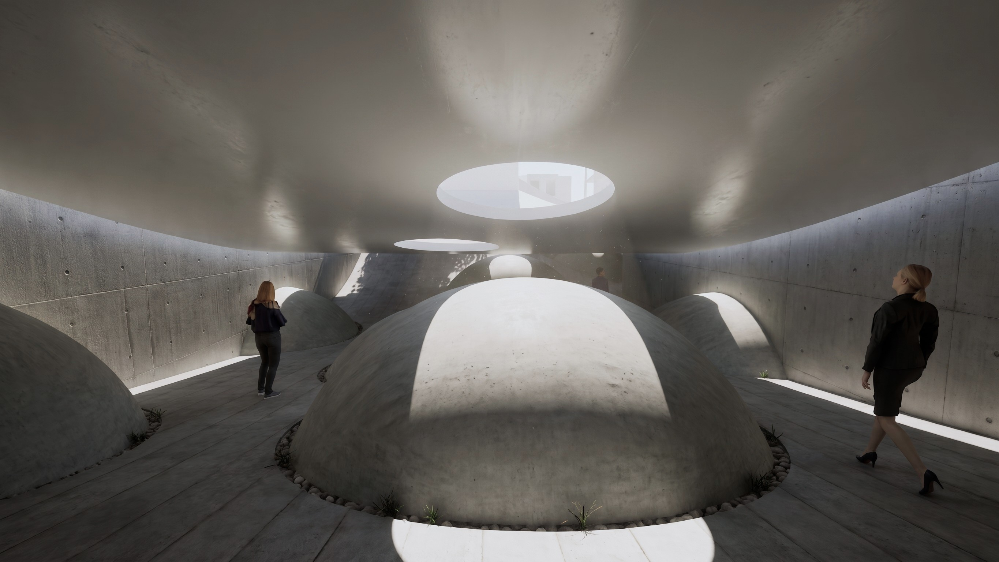
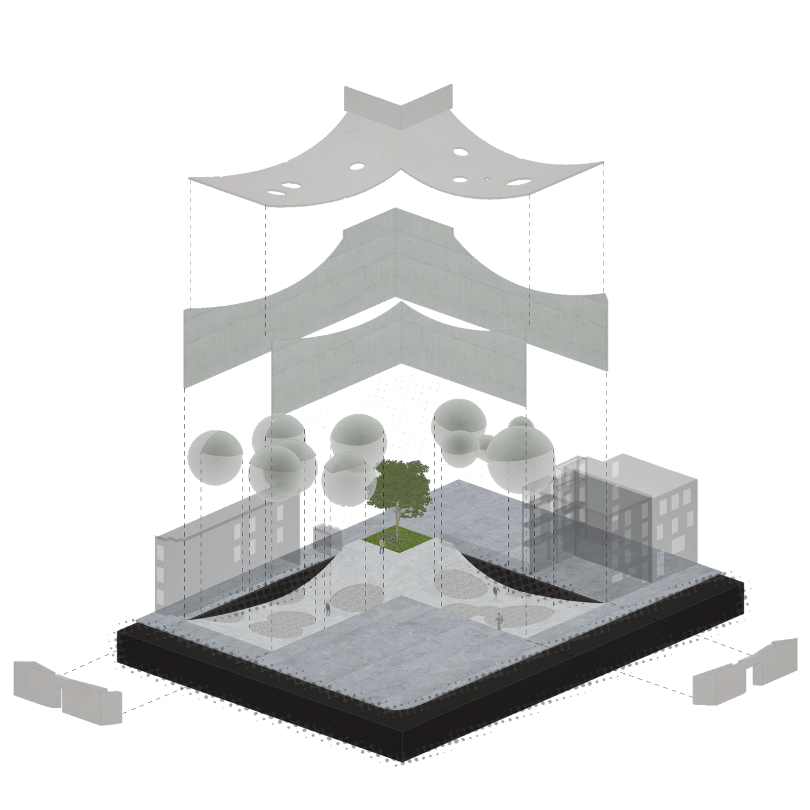
The Clearing, East Boston
The space between the permanent and the impermanent — the built environment and ever-growing nature. Natural forces continuously act upon the built environment, slowly and steadily reshaping it over time. Tree roots lift concrete sidewalks and crosswalks, while prolonged UV exposure fades signage and surfaces. The Clearing embraces this tension, rejecting fixed expressions of personality and instead becoming a canvas upon which nature can leave its mark.
Two entries curve parabolically into the earth and meet at an intersection. Along the way, visitors are met with mounds that interrupt movement and pique curiosity, drawing them onward to find each art piece. Inspired by mountains, the mounds separate space not with man-made walls but with topography, letting every artwork breathe on its own canvas.
At the intersection of these paths, the terrain opens into a clearing. At its center sits a blooming flower bed beneath a spiraling tree, creating a moment of openness and pause within the surrounding landscape.
The Clearing acts as an extension of the ICA, providing an accessible space for displaying artwork created by local communities — allowing art, architecture, and nature to coexist for anyone to experience and enjoy.
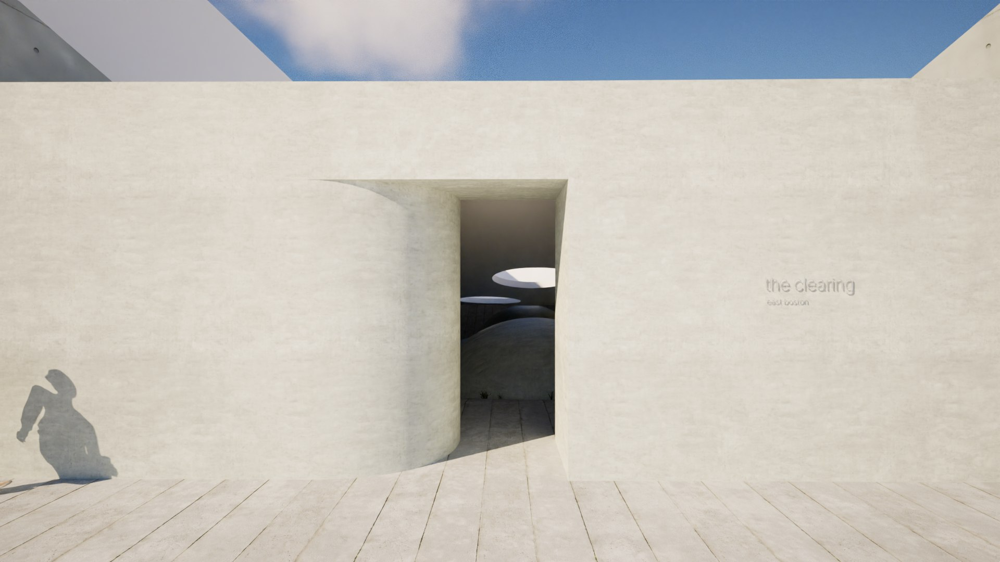
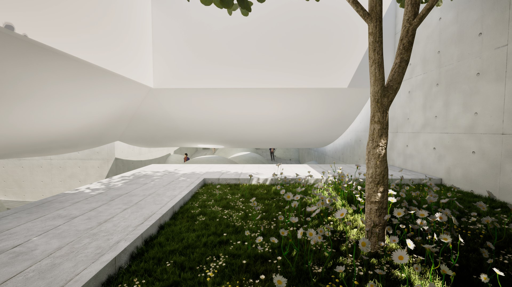
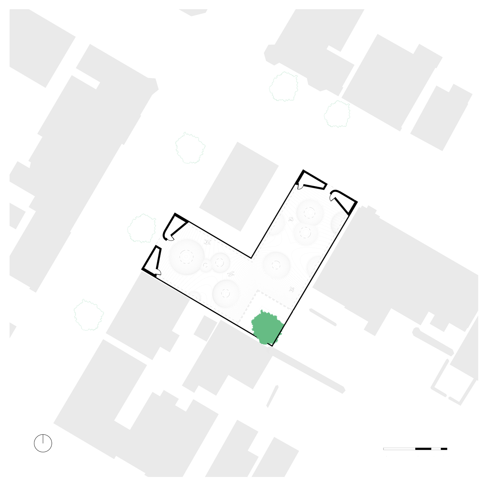
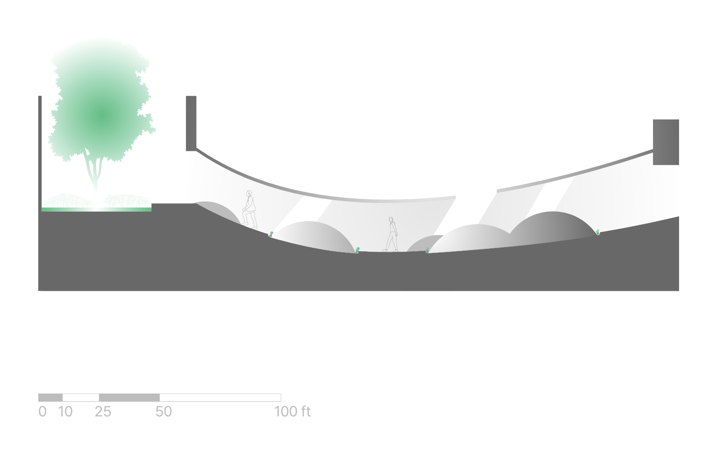
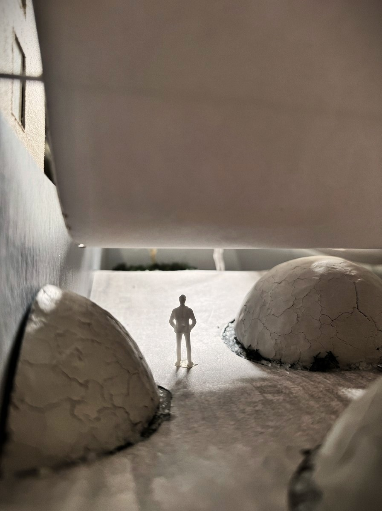
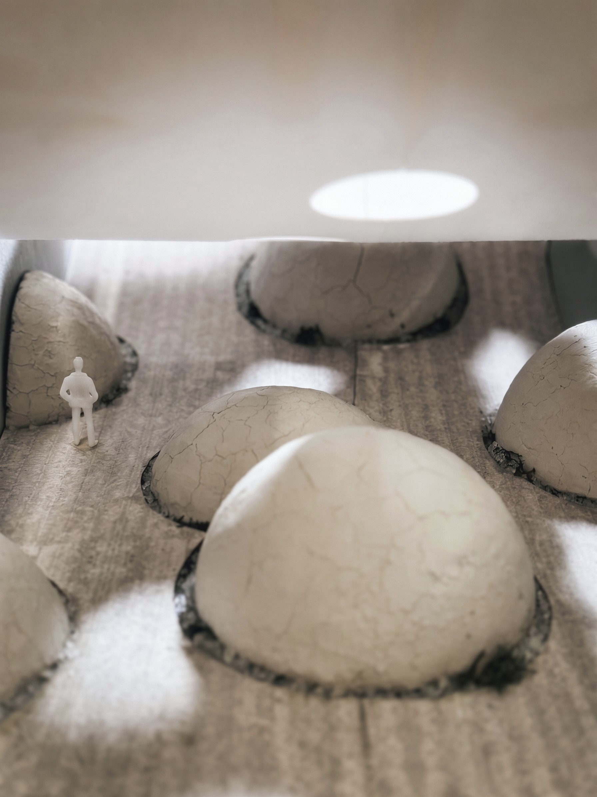
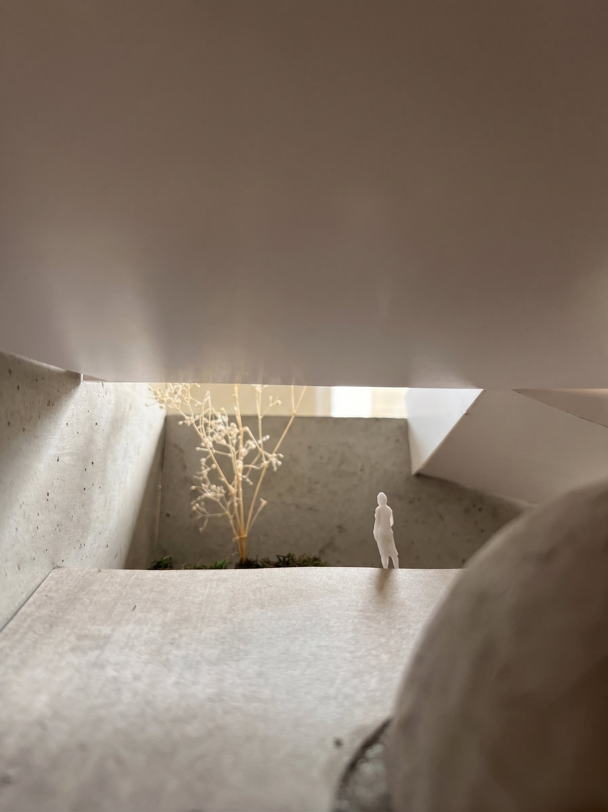
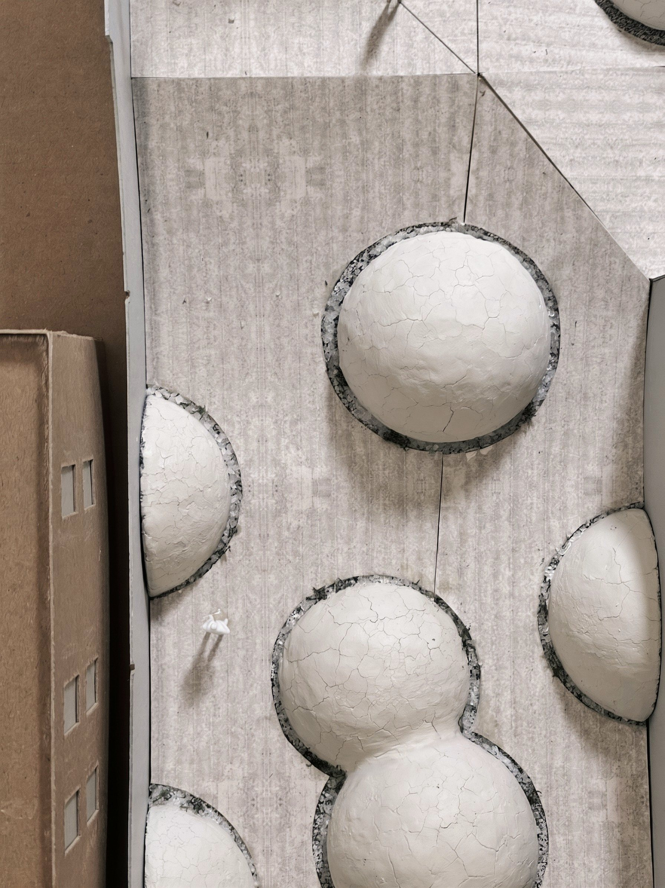
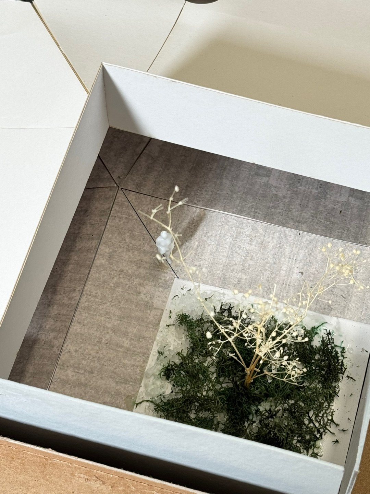
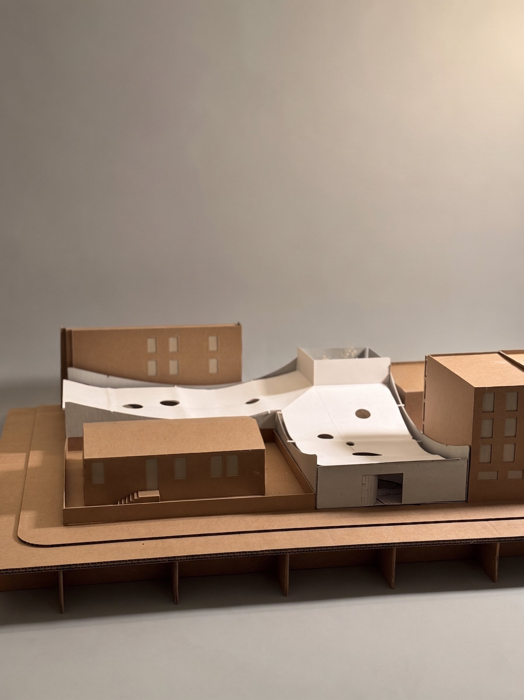
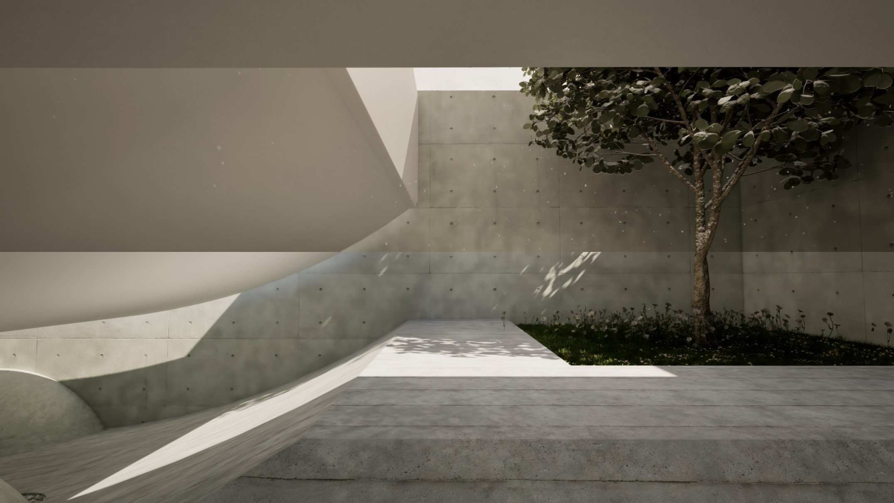